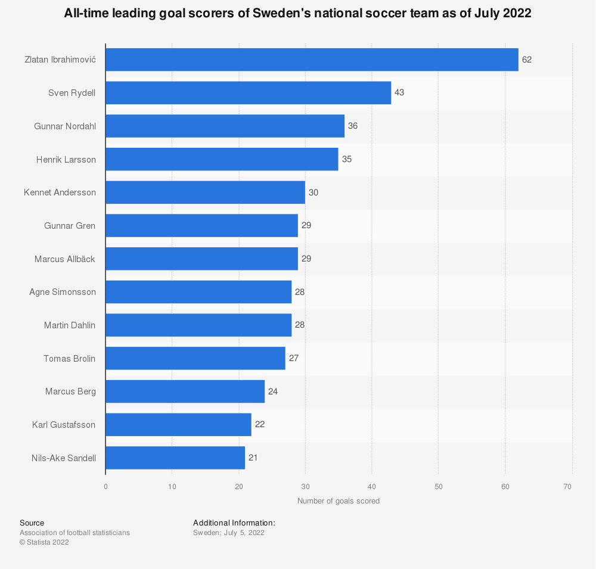

Zlatan Ibrahimović is a swedish professional footballer who plays as a striker for Serie A club
AC Milan and the Sweden national team.
Ibrahimović is
renowned for his acrobatic strikes and volleys. powerful long-range shots,
and excellent technique and ball control.
Ibrahimovic is considered one of the greatest Swedish footballers of all time and holds the record for the most goals scored for the Sweden national team with 62 strikes.

He represented Sweden at the 2002 and 2006 FIFA World Cups, as well as the 2004, 2008, 2012,
and 2016 UEFA European Championships.
He has been awarded Guldbollen (the Golden Ball),
given to the Swedish player of the year a record 12 times,
including 10 consecutive times from 2007 to 2016.
 30-yard bicycle kick
30-yard bicycle kick